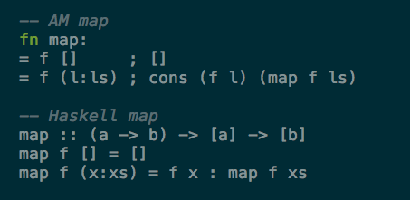
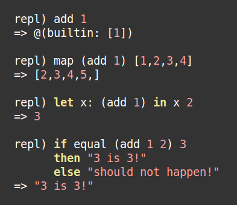
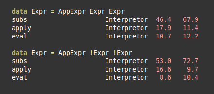
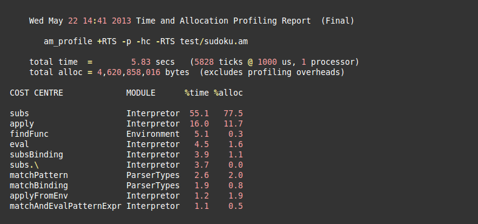

An interpretor for a tiny functional language
Abstract machines SS13
Richard Plangger <e1025637@student.tuwien.ac.at>
Why?
Interesting new concepts
An adventure
(Why would you not implement an interpretor in Haskell?)
Functional programming matters
Key features
Higher order functions
Currying
Pattern matching
Strict evaluation
Dynamic typing (strong)
The syntax explained
 
The goal of this project
Implement an interpretor
Utilizing the new 'language' to implement a sudoku solver
Compare the implementation to a haskell Impl.
The first implementation
Improvements in the Interpretor evaluation
List elements are not evaluated any more
Turning off lazyness did not always improve performance
Minor tweaks

Where is the time spent? GHC Profiling

Improvements in the Interpretor evaluation
Algorithm improvements
Tweaked some functions in the sudoku solver
Especially the function
sudoku_line_valid
had a big performance inpact.
Algorithm improvements
GHC speed
What is missing?
I/O
A module system
Custom data structures